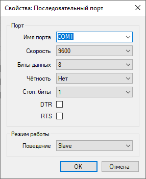
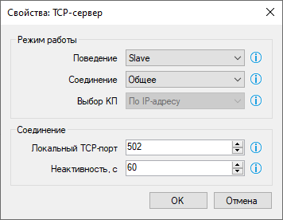
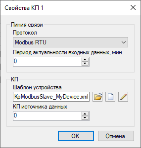

и
и  . Адрес КП имеет важное значение - именно на этот ID устройства будет отвечать Коммуникатор. В основных параметрах линии связи необходимо выбрать тип канала связи и настроить его свойства. Примеры настройки канала связи показаны на рисунках ниже:
. Адрес КП имеет важное значение - именно на этот ID устройства будет отвечать Коммуникатор. В основных параметрах линии связи необходимо выбрать тип канала связи и настроить его свойства. Примеры настройки канала связи показаны на рисунках ниже:Драйвер поддерживает стандартный протокол обмена данными Modbus и работает в качестве ведомого. При использовании драйвера Коммуникатор ожидает входящих запросов и команд от стороннего устройства или приложения, которое является ведущим (мастером). Поддерживаются следующие каналы связи: последовательный порт, TCP-сервер и UDP. Драйвер может работать как в режиме Modbus RTU, так и в режиме Modbus TCP.
Функции драйвера Modbus Slave:
Драйвер Modbus Slave устанавливается в соответствии с общей последовательностью установки драйверов Коммуникатора. Файл библиотеки драйвера - KpModbusSlave.dll.
В первую очередь необходимо создать новую линию связи и КП в базе конфигурации, а также в настройках Коммуникатора. Для этой цели наиболее удобно использовать мастеры, которые вызываются с помощью кнопок и . Адрес КП имеет важное значение - именно на этот ID устройства будет отвечать Коммуникатор. В основных параметрах линии связи необходимо выбрать тип канала связи и настроить его свойства. Примеры настройки канала связи показаны на рисунках ниже:


После создания КП в Коммуникаторе, необходимо настроить его, вызвав форму свойств КП.

Период актальности входных данных позволяет автоматически устанавливать неопределённый статус входных тегов КП, если от устройства не было получено новых данных в течение заданного времени.
Шаблон устройства определяет карту регистров Modbus. Шаблоны устройств драйверов KpModbus.dll и KpModbusSlave.dll полностью совместимы.
КП источника данных устанавливается отличным от нуля, чтобы транслировать значения входных каналов, полученных от другого устройства, в стороннюю систему. Если драйвер используется для взаимодействия с реальным прибором, этот параметр должен быть равен 0.
На следующем рисунке показан редактор шаблонов Modbus:

Драйвер Modbus Slave требует регистрации. После завершения настройки передайте проект на сервер с помощью кнопки  . Затем откройте страницу Драйверы в приложении Администратор, выберите драйвер KpModbusSlave.dll, откройте свойства драйвера и зарегистрируйте его. После регистрации повторно передайте проект на сервер.
. Затем откройте страницу Драйверы в приложении Администратор, выберите драйвер KpModbusSlave.dll, откройте свойства драйвера и зарегистрируйте его. После регистрации повторно передайте проект на сервер.